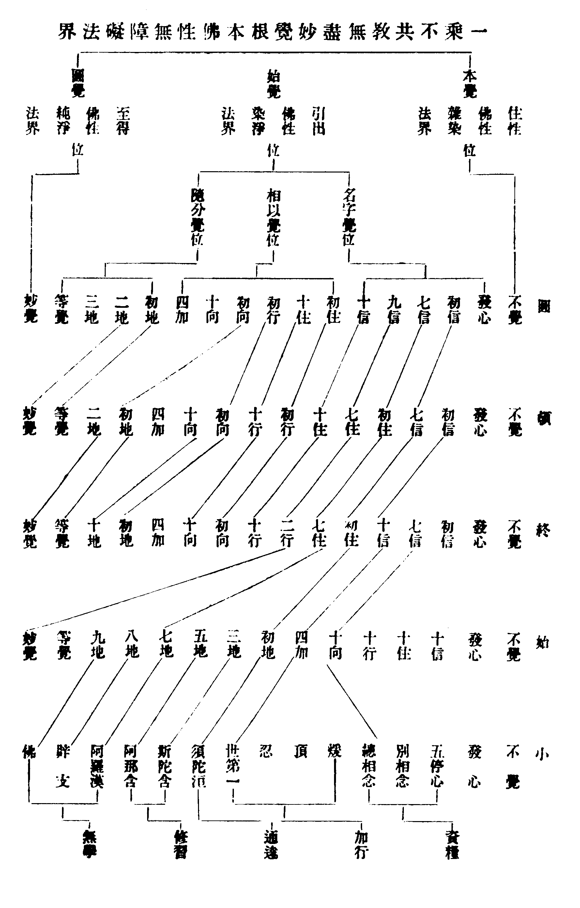

No. 1026
賢首五教斷證三覺揀濫圖
清浙水慈雲沙門續法集
門人嚴指較
東傳三藏。迨唐始足。列祖判教。賢首方周。良由典誥既多。知見自廣。約義判教。備所未備。是以後後勝於前前。賢首二十餘部。清涼五十餘部。圭山十餘部。皆詳教觀斷證。況五教斷證。原出經論。前尚未來。後盡流至。人未之察。反曰無斷無證。豈不屈抑佛祖也歟。(續法)痛心。遂準賢宗諸大部中。錄出斷證。排圖貫線。庶使學者。於一家判釋。明如指掌。無纖疑滯。果能從小發心。至圓妙覺。於中一一解行無謬。畢得斷執障於蓮華藏剎。證法界於毗盧性海。漸歷頓超。又何難哉。此亦略示其梗槩耳。若欲委明。宣閱教儀諸書 三覺 三五位別。一覺性同。但能悟知。頓圓妙覺。
本覺位。五教俱不覺。圓覺位。小則羅漢辟支佛位。後四俱妙覺。始覺位。從發心極於等覺。此中復有三位。一。名字覺位。小發心至停心。始等俱十信。二。相似覺位。小別相至世第一。後四俱三賢四加。三。隨分覺位。小初果至三果。始等俱十地等覺。其間高下階降不等。亦隨當教斷證以釋。故此三覺五位。能判教相之權實也。
一乘不共教無盡妙覺根本佛性無障礙法界

○圓教(此教斷證。如拆錦花。如鎔金獅)
(初住至妙。品數準終。但此三地。超頓妙覺。便有六十二品)。
〔本〕
〔名字〕
- 發心(謂發普賢廣大行願心也)
- 初信(除我執分別俱生現。與小初果。始初地。終初住頓七信齊)
- 七信(除法執分別俱生現。與小四果。始七地。終七住。頓初住齊)
- 九信(伏二執分別俱生麤種。與始妙覺。終二行。頓七住齊)
- 十信(伏二執分別俱生細種。與終十行。頓十住齊上皆明圓伏中伏斷。下方圓斷也)
〔相似〕
- 初住(除二執分別俱生麤種。與終初向。頓初行齊)
- 十住(除二執分別俱生細種。與終十向。頓十行齊)
- 初行(圓斷二執分別俱生現種盡。更斷習氣一分。與終初地。頓初向齊)
- 初向(圓斷二執習氣十一分。與終等覺。頓初地齊)
- 十向(圓斷習氣二十分與頓十地齊)
- 四加(圓斷十向習盡。進斷初地習氣)
〔隨分〕
- 初地(圓斷習氣二十一分。與頓等覺齊)
- 二地(圓斷習氣二十二分。與頓妙覺齊)
- 三地(圓斷習氣二十三分。頓教不知名目)
- 等覺(圓斷習氣三十一分。進斷佛地習氣一分)
〔圓〕
- 妙覺(圓斷二執無盡現種習盡。在無障礙法界土。成無障礙法界佛。坐普融無盡師子座。說緣起法界法令偏教三乘并上上根凡夫外道轉偏成圖也)
○頓教(此教斷證。如狂迷歇。如睡夢覺)
(本品準前。此中三地。亦超終妙。增成五十二品)。
〔本〕
〔名字〕
- 發心(謂發內證聖智心也)
- 初信(伏二執分別俱生現。與小加行。始第一。終十信齊)
- 七信(除我執分別俱生現。與小初果。始初地。終初住齊)
(上皆頓伏。向下皆頓斷中明伏斷也)。
〔相似〕
- 初住(除法執分別俱生現。與小四果。始七地。終七住齊)
- 七住(伏二執分別俱麤種。與始妙覺。終二行齊)
- 十住(伏二執分別俱生細種。與與終十行齊)
- 初行(除二執分別俱生麤種。與終初向齊)
- 十行(除二執分別俱生細種。與終十向齊)
- 初向(頓斷二執分別俱生現種盡。更斷習氣一分。與終初地盡)
- 十向(頓斷二執習氣十分。與終十地齊)
- 四加(斷前十向習盡。進伏初地習氣)
〔隨分〕
- 初地(頓斷斷習氣十一分。與終等覺齊)
- 二地(頓斷習氣十二分。與終妙覺齊三地已去。終教不知名目)
- 等覺(頓斷習氣二十一分。進斷佛地習氣一分)
〔圓〕
- 妙覺(頓斷二執現種習盡。在法性土。成法性佛。坐虗空座。說一乘真性法。令漸教三乘并上根凡夫外道。轉漸成頓也)
○終教(此教斷證。如器成金。如水即水)
(謂初住至妙。每有四十二品。勝始教可知)。
〔本〕
〔名字〕
- 發心(謂發慈悲深直心也)
- 初信(即略伏二障)
- 七信(伏二障分別俱生麤現。與小總相。始十向齊)
- 十信(伏二障分別俱生細現。與小加行。始第一齊)
〔相似〕
- 初住(除煩惱分別俱生現。與小初果。始初地齊)
- 七住(除所知分別俱生現。與小四果。始七地齊)
- 二行(伏二障分別俱生麤種。與始妙覺齊。三行已去。始教人不知名目)
- 十行(伏二障分別俱生細種)
- 初向(除二障分別俱生麤種)
- 十向(除二障分別俱生細種)
- 四加(伏二障習氣)
(以上皆明具伏二障中伏斷如此。向下皆具斷也)。
〔隨分〕
- 初地(斷二障分別俱生現種盡更斷習氣一分)
- 十地(斷二障習氣十分)
- 等覺(斷二障習氣十一分。進斷佛地習氣一分)
〔圓〕
- 妙覺(斷二障現種習盡。在受用土。成受用佛。坐金剛座。說藏心法令權教三乘并中根凡夫外道。轉權成實也)
○始教(此教斷證。如鏡離垢。如月出雲)
(斷事理二障。滅分變二死。顯我法二空理。證智斷二果德。初地至妙。每有十二品)。
〔本〕
〔名字〕
〔相似〕
- 十住(雙伏二障中。少伏煩惱分別現)
- 十行(雙伏二障中。少伏所知分別現)
- 十向(伏除二障分別現。相資糧。空乾慧。與小總相念齊)
- 四加(除二障分別現。伏分別種及俱生現。相加行。空性地。與小世第一齊)
〔隨分〕
- 初地(始斷二障分別種。進斷俱生種現一分。相見道空八人見地。與小初果齊)
- 三地(斷二障俱生種現三分。空薄欲地。與小二果齊)
- 五地(斷二障俱生種現五分。空離欲地。與小三果齊)
- 七地(斷二障俱生種現七分。空已辦地。與小四果齊)
- 八地(斷二障俱生種現八分。空辟支佛地。與小支佛齊)
- 九地(斷二障俱生種現九分。與小佛果齊十地已上。小教不知名目)
- 等覺(斷二障俱生種現十一分。進斷佛地一分。空菩薩地。相修習位)
〔圓〕
- 妙覺(頓斷二障分別俱生種現盡。空佛地。相究竟位。在淨化土。成勝應佛。天衣座上。說空相法。令小乘及下根凡夫外道。轉小成大也)
○小教(此教斷證。如木作灰。如色歸空)
(斷煩惱障。滅分段死。顯生空理。證偏真果)。
〔本〕
- 不覺(凡夫地位。覺性本具。無明迷障。成不覺故。此則不覺偏真性也)
〔名字〕
- 發心(謂發出界取滅心也)
- 五停心(多貪不淨觀。多瞋慈悲觀。多癡因緣觀。多散數息觀。多障念佛觀。此一位破障)
〔相似〕
- 別相念(觀身不淨。觀受是苦。觀心無常。觀法無我)
- 總相念(觀身不淨。受心法皆不淨。乃至觀法無我。身受心亦無我)
(此上二位。唯觀欲界苦諦。伏煩惱惑)。
(已上資糧位)。
- 煖(剏觀欲界四諦。修十六行)
- 頂(用觀同前。轉更明朗)
忍
(下忍遍觀八諦。修三十二行)
(中忍漸減緣行。乃至一行二剎那在)
(上忍亦唯觀欲界苦。於一行二剎那中。前一剎那盡)
- 世第一(一行二剎那中。後一剎那盡。伏除分別煩惱)
(已上加行位)。
〔隨分〕
(通達位)。
- 斯陀含(斷欲界前六品俱生思)
- 阿那含(斷欲界後三品。進斷上二界七十二品俱生思煩惱)
(已上修習位)。
〔圓〕
- 阿羅漢(斷我執分別俱生煩惱盡。證生空理。住有餘無餘涅槃)
(無學位)。
〔圓〕
- 辟支(斷見思煩惱障。與聲聞同。更侵習氣。故居其上。餘理果亦同)
(無學位)。
〔圓〕
- 佛(從初發心。發四弘願。三祇百劫。修行種相。次入補處。托胎出家安坐不動。發真無漏。頓斷見思煩惱習氣。在染化土。成劣應佛。生草座上。說諦緣法。令下下凡夫外道。轉凡成聖也)
(無學位)。
庚戌春。豎錄此圖於單條紙上。緇素輩不粘之座側。則易於遺失。重請方書。辛酉臘月八。再為橫鈔於冊頁。不唯令行坐可閱。而且流之遠與久也。然觀者須不凝滯於佛。若作迷本逐末看。豎則先上次下。橫則先前次後。若作返妄歸真看。豎則先下次上。橫則先後次前。人但知小始終頓圓。不知圓頓終始小。今特圖出之。令作兩觀。以見其行布中。而實圓融無礙焉。
慈雲灌頂行者續法題
【經文資訊】卍新續藏第 58 冊 No. 1026 賢首五教斷證三覺揀濫圖
【版本記錄】CBETA 電子佛典 2014.04，完成日期：2014/04/26
【編輯說明】本資料庫由中華電子佛典協會（CBETA）依卍新續藏所編輯
【原始資料】CBETA 人工輸入，CBETA 掃瞄辨識
【其他事項】本資料庫可自由免費流通，詳細內容請參閱【
中華電子佛典協會資料庫版權宣告】